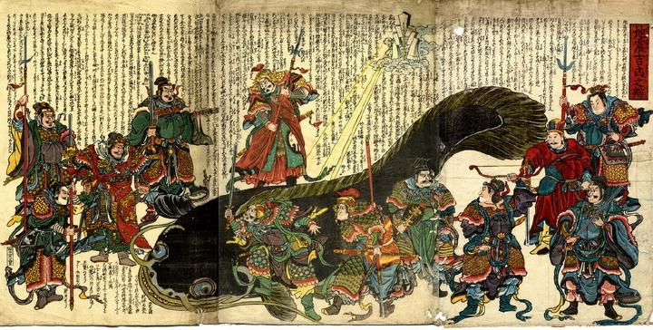

中国風の武人たちが、武器を手に大鯰を取り囲んでいる。上空には御幣があり、そこから光線が放たれ鯰を照らしている。
出典：親書誌：U426_nichibunken_0220：地震吉凶之弁；ジシンキッキョウノベン／日付：2010／資源識別子：U426_nichibunken_0220_0001_0000
Copyright (c)2010- International Research Center for Japanese Studies, Kyoto, Japan. All rights reserved.